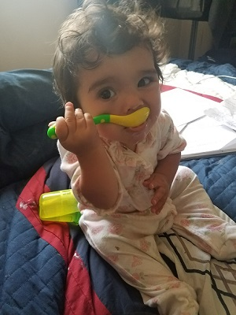

About Me

I'm Brick Tamland. People seem to like me because I am polite and I am rarely late. I like to eat ice cream and I really enjoy a nice pair of slacks. Years later, a doctor will tell me that I have an I.Q. of 48 and am what some people call mentally retarded.
People call me the Bry man; I'm the stylish one of the group. I know what you're asking yourself and the answer is yes. I have a nick name for my penis. Its called the Octagon, but I also nick named my testes - my left one is James Westfall and my right one is Doctor Kenneth Noisewater. You ladies play your cards right you just might get to meet the whole.
Champ here! I'm all about havin' fun. You know, get a couple cocktails in me, start a fire in someone's kitchen. Maybe go to SeaWorld, take my pants off. Anyway, I kinda known for my catch phrase WHAMMY! As in Gene Tenace at the plate... iiittt WHAMMY! WHAMMY!
-Anchorman: The Legend of Ron Burgandy :)
Connect with Me